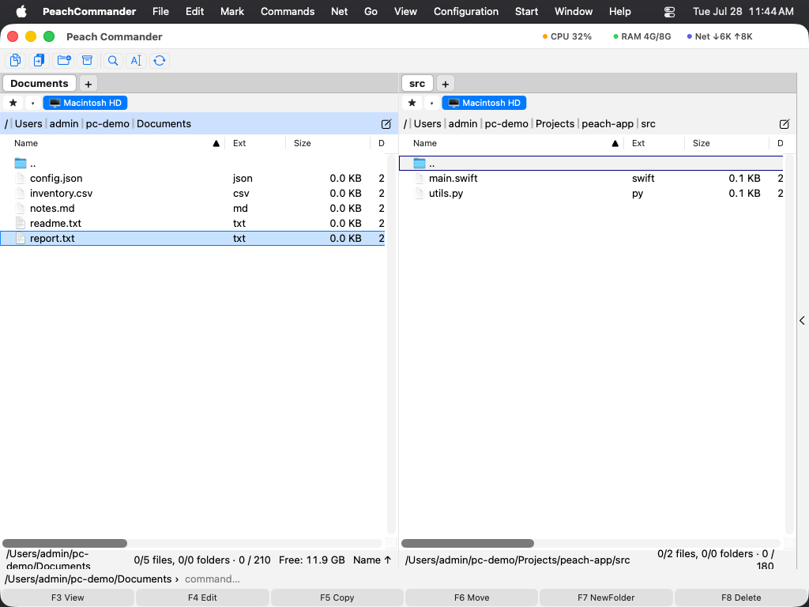

Главное окно
Peach Commander показывает два списка файлов рядом, чтобы вы одновременно видели, откуда файлы берутся и куда идут. Большая часть вашей работы происходит в этих двух панелях; полосы вокруг них позволяют переключать диски, переходить к папке и выполнять обычные файловые команды, не отрываясь от клавиатуры. Этот обзор называет каждую часть окна, чтобы остальная часть справки была понятной.

(Рис.: Главное окно — две панели с полосой кнопок, полосой дисков и полосами пути сверху и полосой функциональных клавиш снизу.)Две панели и активная панель
Окно разделено на левую и правую панели, каждая из которых показывает содержимое одной папки. В каждый момент активна только одна панель: она показывает курсор (выделенную строку), а её полоса пути отрисовывается с цветным фоном. Команды вроде копирования и перемещения всегда действуют на активную панель и отправляют файлы в другую.
- Щёлкните где угодно в панели, чтобы сделать её активной, или нажмите Tab для переключения между ними.
- Используйте клавиши со стрелками для перемещения курсора вверх и вниз по активной панели.
- Нажмите Enter на папке, чтобы открыть её, или на
..вверху списка, чтобы подняться на один уровень.
Полосы вокруг панелей
- Полоса кнопок (вверху): ряд плоских кнопок для частых команд. Щёлкните кнопку, чтобы выполнить её команду; щёлкните кнопку правой кнопкой мыши, чтобы отредактировать полосу.
- Панель дисков: по кнопке на каждый доступный диск или том, у каждой — свободное место. Щёлкните том, чтобы перевести туда эту панель; щелчок правой кнопкой извлекает его — предлагается для съёмных томов и смонтированных образов дисков, недоступно для загрузочного диска и сетевых ресурсов. Плагины могут добавлять собственные диски — Task Manager один из них — и они ведут себя как любой другой том: панель переключается на него, кнопка остаётся выбранной, а вкладка получает имя диска. Каждая кнопка несёт собственный значок тома — тот же, что показывает Finder, — так что жёсткий диск, флешку, смонтированный образ и сетевой ресурс видно с первого взгляда.
- Полоса пути: показывает текущую папку в виде интерактивных «хлебных крошек». Щёлкните сегмент, чтобы сразу перейти к этой папке, или щёлкните путь, чтобы ввести расположение.
- Строка состояния (под каждым списком): текущая сводка панели — сколько файлов и папок выбрано и их общий размер.
- Командная строка (внизу): текстовое поле, где вы можете ввести команду в стиле оболочки, которая выполняется в текущей папке.
- Полоса функциональных клавиш (в самом низу): шесть кнопок с надписями F3 Просмотр, F4 Правка, F5 Копия, F6 Перемещение, F7 Новая папка и F8 Удаление. Щёлкните кнопку или нажмите соответствующую клавишу.
 (Рисунок: панель дисков — по кнопке на том, со свободным местом; щелчок правой кнопкой по тому извлекает его.)
(Рисунок: панель дисков — по кнопке на том, со свободным местом; щелчок правой кнопкой по тому извлекает его.)
Сочетания клавиш
| Действие | Сочетание |
|---|---|
| Переключить активную панель | Tab |
| Открыть папку / элемент под курсором | Enter |
| Подняться на одну папку вверх | Backspace |
| Просмотреть файл | F3 |
| Редактировать файл | F4 |
| Копировать в другую панель | F5 |
| Переместить / переименовать в другую панель | F6 |
| Новая папка | F7 |
| Удалить (в Корзину) | F8 |
Примечания
- Полоса функциональных клавиш динамически переименовывает себя, когда вы удерживаете модификатор. Удержание Shift, например, меняет F6 на действие переименования на месте, поэтому кнопки всегда показывают, что клавиши сделают прямо сейчас.
- Почти любую полосу можно показать или скрыть. Загляните в меню «Вид» и «Конфигурация», чтобы включить и выключить полосу кнопок, полосу дисков, командную строку или полосу функциональных клавиш либо расположить две панели сверху и снизу вместо расположения рядом.
- На многих клавиатурах Mac клавиши F по умолчанию работают как элементы управления мультимедиа и яркостью. Удерживайте клавишу Fn вместе с F3–F8 или включите «Использовать клавиши F1, F2 и т. д. как стандартные функциональные клавиши» в Системных настройках, чтобы использовать их напрямую.